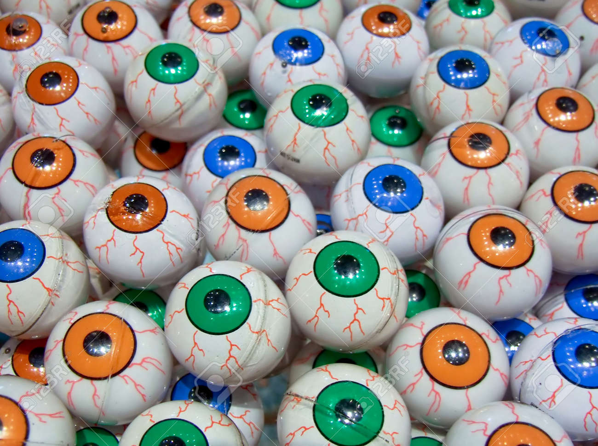

Experiment 4 - Infinite Worlds
WASD to scroll. Eyes follow mouse (keep the mouse still for another effect).
World seed:

Description
A bunch of easily distracted eyeballs.
Variation in Space: Eyes show up in different tiles in a non-uniform manner.
Variation in Key: Eye locations, colors, and turning rates are determined by a world seed.
Life: Eyes will look at your cursor if it's been recently moved. If the cursor hasn't moved for a brief period, eyes will spin at different rates.
Technical
Describe in detail what you did technically and how it works?
Reflection
Each person that worked on the code should reflect on the process, the difficulties, and the successes of the experiment.